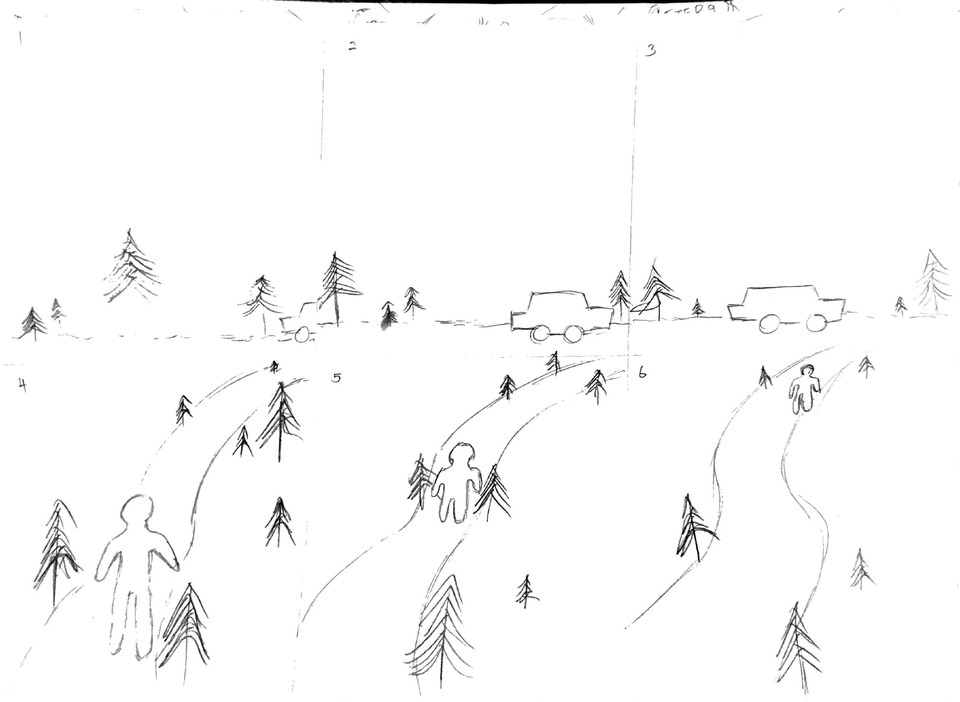
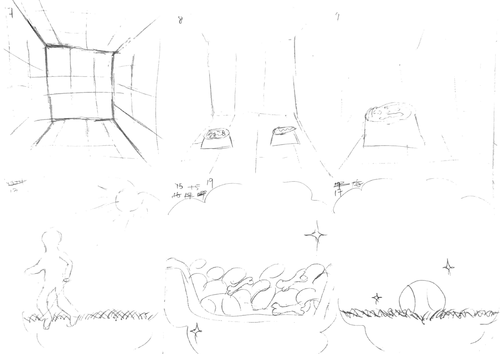
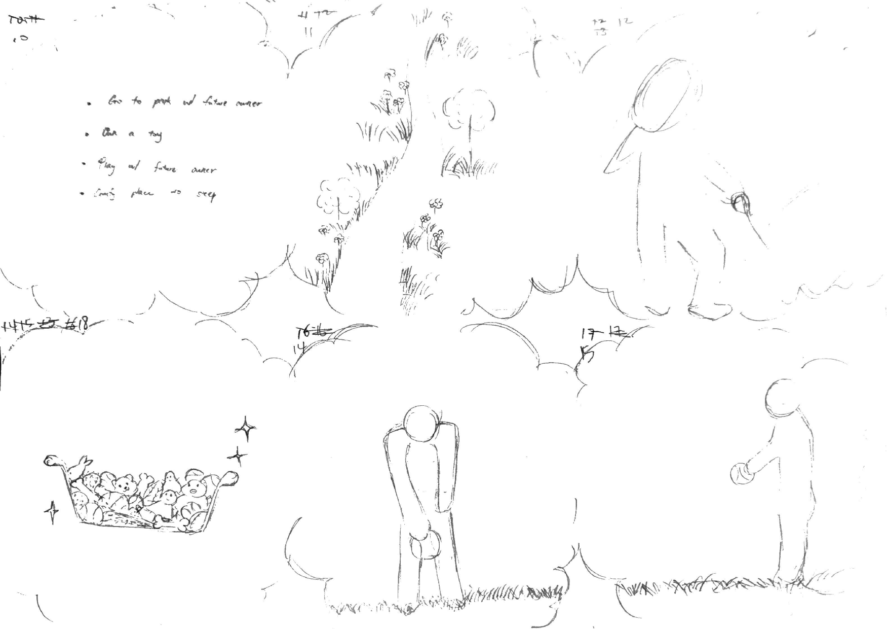
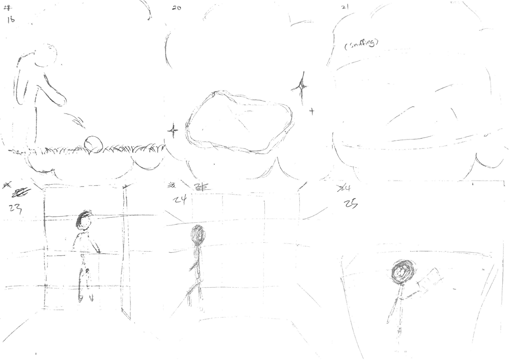
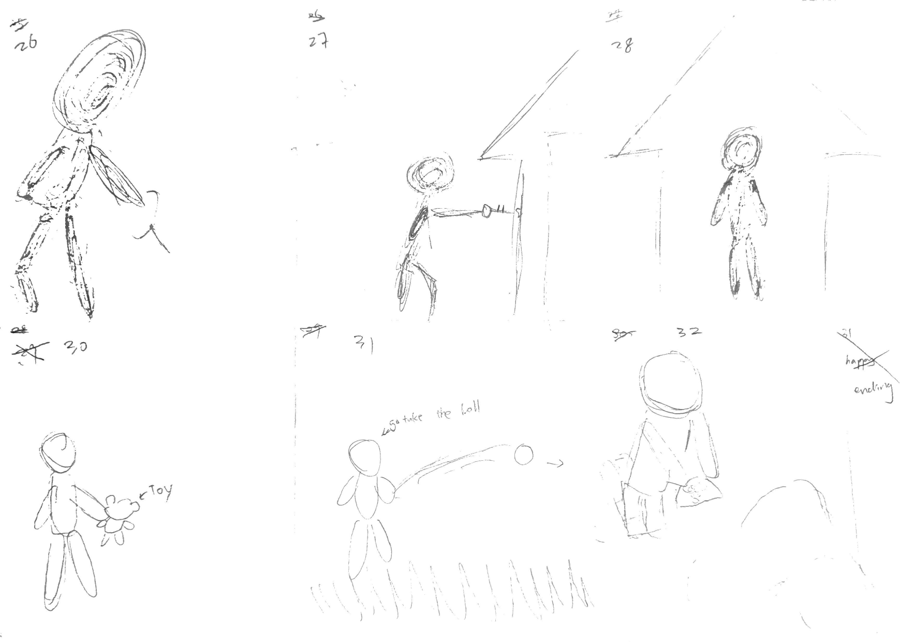
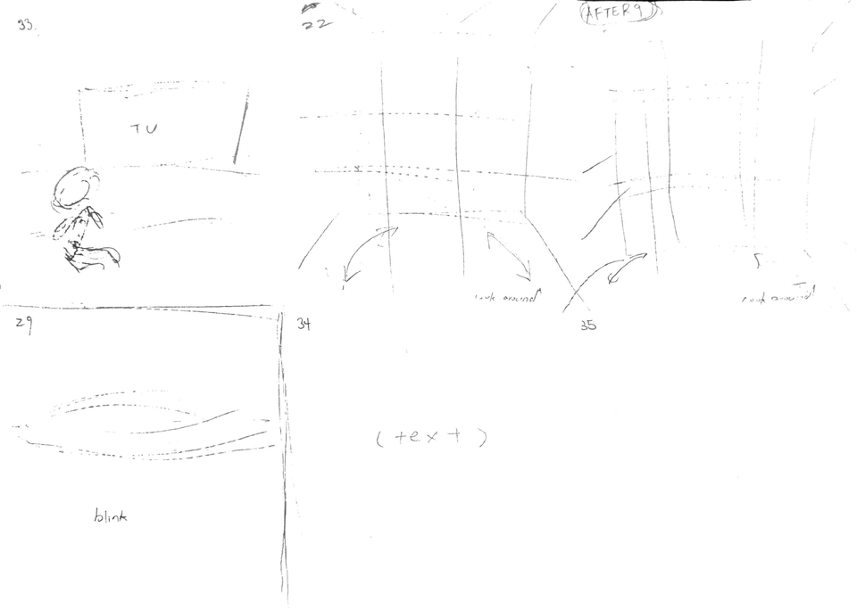

👥 My Team Roles & Responsibilities
📝 Core Contributions & Task Execution:
- Narrative Blueprinting: Authoured and structured the comprehensive 35-shot Cinematic Shot List.
- Pre-Production Assets: Structured and rendered the sequential timeline animatic.
- On-Set Leadership: Coordinated, delegated, and managed the technical cinematography tasks.
- Technical Execution: Served actively as both the primary camera operator and on-screen actor.
🎬 Production Reflection
Before undertaking this project, I never anticipated how intricate and detailed the video production process could be. Documenting the story forced me to examine the details required for effective media generation, from outlines to frame-by-frame asset syncing and audio level balances. Having executed this workflow from the ground up, I look back at the movies and films I used to watch with a renewed sense of awe. I now respect and admire how filmmakers harmonize these thousands of complex elements to deliver a flawless, high-impact storytelling masterpiece on screen.
⚠️ Production Challenge
❌ Prop Limitation: Missing Shelter Cage
During the pre-production planning phase, our script was configured around a designated "shelter cage" prop to establish the baseline setting for Scene 2. However, upon moving into the final production segments, the physical cage asset was unavailable on set.
📅 Production Timeline & Artifacts
Story Outline
Video Preparation Plan: Story Outline and Production Pipeline
The initial phase of our production pipeline focused on establishing a firm narrative link between our qualitative data and visual emotional triggers.
This story outline introduces a compelling cinematic structure designed to dismantle biases and foster community empathy.
Animatic and Shot List






🎬 Animatic
📋 Cinematic Shot List
Scene 1: Abandoned & Sent to the Shelter
Scene 2: Living in the Shelter & The Bucket List
Scene 3: The Visitor (Meeting the Owner)
Scene 4: Adoption
Rough Cut
The rough cut serves as our first assembly of the captured footage, allowing us to evaluate the pacing, narrative flow, and audio transitions before moving into final post-production adjustments.
Final Product
The post-production cycle is complete. All timeline assets, audio adjustments, and cinematic sequences have been integrated into the final high-definition video master.
▶ Watch Final Video (A Day in the Life)